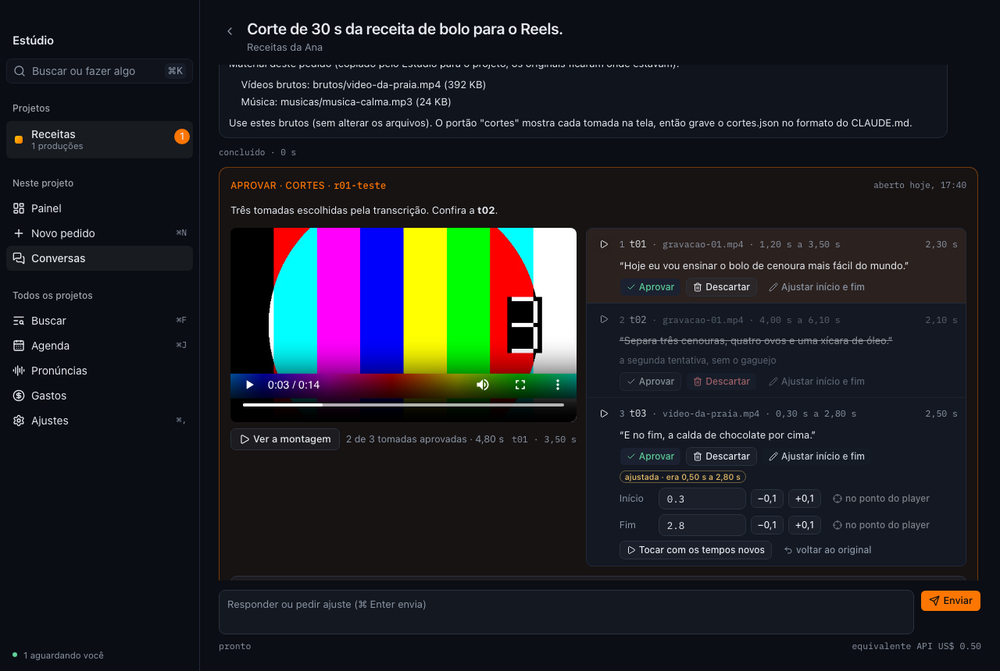
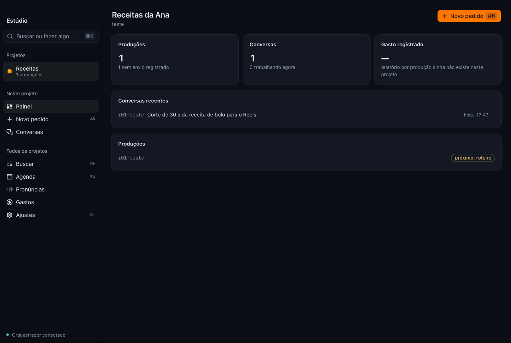
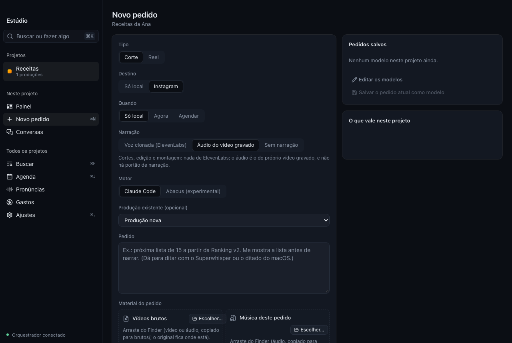
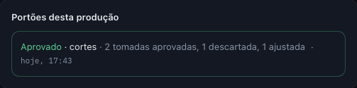
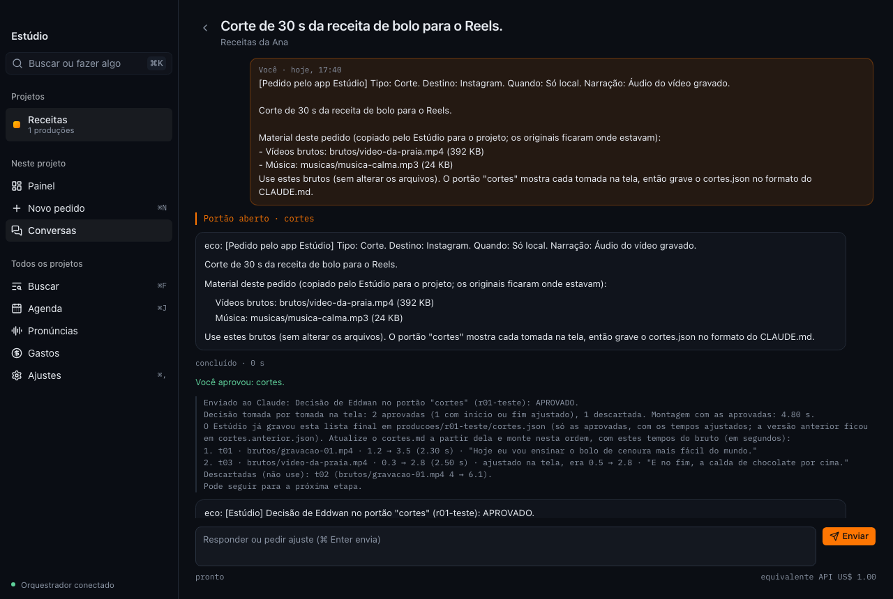

Peça o vídeo.
Aprove cada etapa.
O Estúdio é o app de Mac da Hallen Tech para produzir vídeos com inteligência artificial: do material que você gravou ao corte final, com cortes, montagem, música e legenda feitos no seu Mac.

Como funciona
Você diz o que quer e aprova. A IA faz o trabalho pesado e para nas etapas que importam, com o material na tela para você conferir.
Peça
Escreva o pedido, escolha o destino e solte os vídeos gravados e a música.
A IA trabalha
Transcreve, escolhe as tomadas, corta, monta, coloca a música por baixo da fala e legenda.
Você aprova
Cada etapa importante espera o seu OK: cortes tomada por tomada, narração e vídeo final.
Pronto
O vídeo sai nos formatos do pedido, vertical para Reels e Shorts ou horizontal.
Feito para quem produz
Painel de cada projeto
Produções, conversas e o que está esperando por você, projeto por projeto, numa janela de Mac de verdade: barra de menus, ⌘K para buscar e tema claro ou escuro conforme o sistema.

Novo pedido
Tipo, destino, quando publicar, narração (voz clonada, áudio do próprio vídeo ou sem narração) e o motor de IA de cada pedido. Os vídeos brutos e a música entram arrastando do Finder.

Aprovação tomada por tomada
Cada tomada com o player do trecho, a duração e o que é falado. Aprove, descarte ou ajuste o início e o fim pelo ponto do player, veja a montagem e mande a decisão de volta.

A conversa com a IA
Cada pedido vira uma conversa: o que a IA fez, as decisões de cada etapa e o que vem em seguida. Peça ajustes a qualquer momento, também de dentro da produção.

E mais
O que torna o dia a dia mais leve.
Primeira abertura guiada
Seu nome, a pasta dos projetos, o motor de IA e as ferramentas do Mac, e o primeiro projeto já pronto.
Claude Code ou Abacus
Escolha o motor de IA por projeto, com a sua própria conta.
Avisos do macOS
Quando a IA precisa de você, o aviso leva direto para a conversa que está esperando.
@ para citar outro projeto
A IA consulta materiais de outro projeto sem misturar as regras do pedido.
Seus arquivos ficam com você
Vídeos, projetos e conversas ficam no seu Mac.
Atualização automática
As versões novas chegam sozinhas, assinadas pela Hallen Tech.
Instalar
Leva um minuto. O app é assinado com o Developer ID da Hallen Tech e notarizado pela Apple, então abre direto.
Arraste
Leve o Estúdio para a pasta Aplicativos e abra.
Configure
Siga o passo a passo. Você vai precisar do Claude Code ou do Abacus com login e do ffmpeg; o Estúdio mostra os comandos.